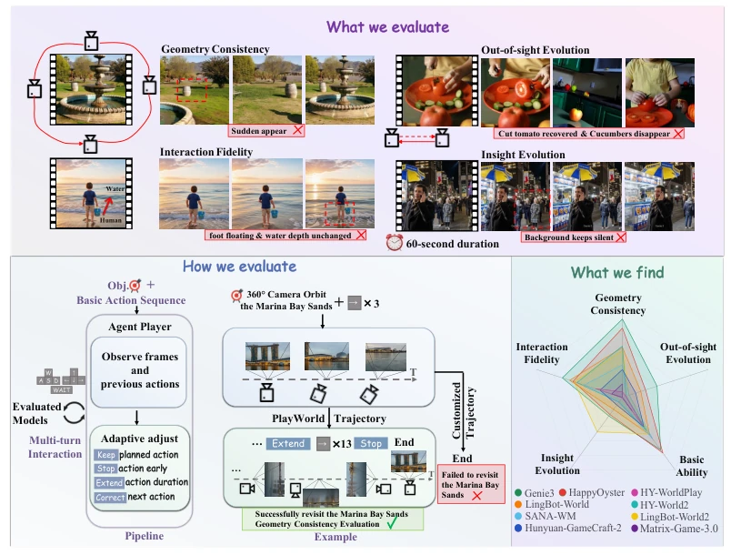
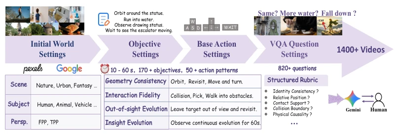
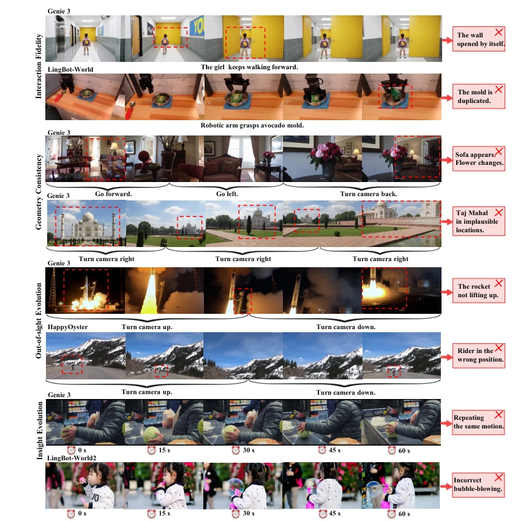
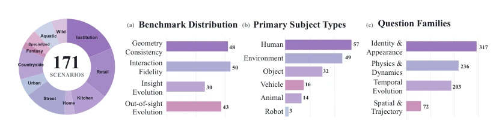
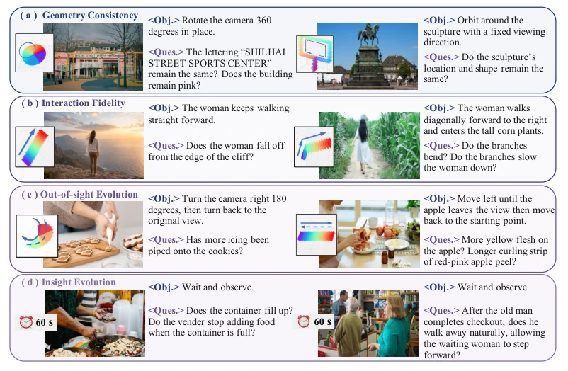
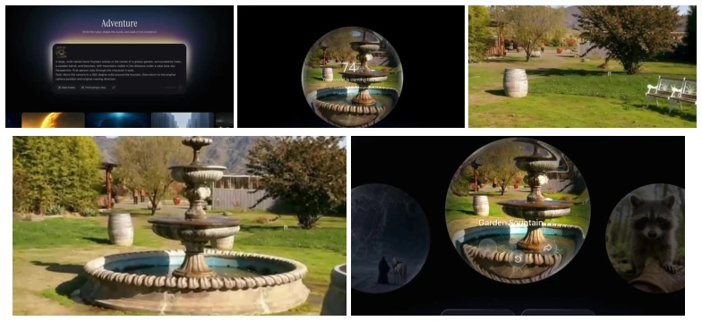

This paper pours cold water on the video world model community while also providing a new yardstick. PlayWorld no longer has models "parade" along fixed trajectories, but instead uses an Agent Player to simulate human players to "play". The highlight lies in introducing Long-Horizon Objectives and adaptive action adjustment, resolving evaluation bias caused by inconsistent action granularity across different models. However, the drawbacks are equally obvious: relying on external multimodal large models (such as Claude/Gemini) as Agents results in high inference costs and significant latency, potentially masking the models' inherent defects. The experimental results are even more stinging: even Genie 3, a closed-source giant, remains subpar in long-term memory and physical consistency; the so-called "world models" are still far from true open-world exploration.
Existing benchmarks such as WorldScore (Duan et al., 2025) and WorldMark (Xu et al., 2026b) mostly rely on predefined low-level control trajectories. This paradigm does not align with human evaluation habits, as humans typically pursue high-level goals (such as "circle the arena 360 degrees"). Due to differences in action granularity (Action Granularity) and response speed across different models, identical control commands produce varying movement amplitudes in different models, resulting in incomparable evaluation outcomes. For instance, Genie 3 might complete a 360-degree turn in 3 steps, whereas another model requires 10 steps; fixed trajectories lead to skewed geometric consistency scores. Furthermore, closed-source models (such as Genie 3, HappyOyster) lack automated evaluation interfaces, making manual evaluation costly and prone to introducing bias.

Figure 1: PlayWorld evaluates world models from the perspective of a human player. We define long-horizon objectives such as “turning around 360 degrees” or “walking into the water”, and use an Agent Player to interact with the world models. We then evaluate them from multiple perspectives, including geometry consistency, interaction fidelity, and persistent state evolution.
The overall workflow is structured as a triplet of "Initial World + Long-Horizon Objectives + Base Action Sequence". The core innovation is the Agent Player module, consisting of multimodal Agent models (such as Claude) and interfaces. The Agent observes generated frames and historical actions, making adaptive decisions (Keep/Stop/Extend/Correct/End), rather than mechanically executing preset trajectories. This achieves closed-loop interaction, ensuring fair comparison of different models under identical goals. Evaluation dimensions are categorized into geometric consistency, interaction fidelity, out-of-view evolution, and insight evolution, scored via the VQA Rubric Verifier (based on Gemini 3.1 Pro). Additionally, combined with metrics such as VBench to evaluate video quality and action controllability, a comprehensive score is formed.

Figure 2: Benchmark construction pipeline of PlayWorld. Starting from diverse initial worlds, annotators define long-horizon objectives based on scenario-specific attributes, write basic action sequences, and construct sample-specific VQA rubrics. The resulting benchmark spans over 170 human-annotated cases and 50 action patterns over 10–60-second rollouts, with more than 820 questions applied to over 1,400 interactive videos.
Evaluated 9 world models (5 closed-source, 4 open-source) across 171 scenes. Metrics include VQA scores (1-5 points), trajectory pass rates, and VBench quality scores. Results indicate Genie 3 achieved the highest comprehensive score (2.12), yet all models scored consistently low on "out-of-view evolution" and "insight evolution", indicating that long-term state maintenance remains a bottleneck. SANA-WM exhibits good trajectory control but poor consistency, exposing a decoupling between control and capability. Ablation experiments demonstrate that the "Predefined + Agent" strategy outperforms pure predefined or pure Agent approaches, balancing intent consistency with adaptability.

Figure 5: Representative failures across four evaluation dimensions. Current video world models can follow camera or action controls, but still struggle to simulate coherent and realistic world dynamics.
其他图片Other Figures

Figure 3: Composition of PlayWorld. The benchmark comprises over 170 human-annotated cases across diverse scenario categories. The cases span four evaluation dimensions and diverse subject types, with dimension-specific VQA questions tailored to their evaluation criteria.

Figure 4: Representative cases in PlayWorld. Each case combines an initial world, a scene- grounded long-horizon objective, and a sample-specific VQA rubric. The expected trajectory is visualized alongside each case; for insight evolution, the camera remains stationary and observes the scene for 60 seconds.

Figure 7: Agent interface execution on a web-based world model. (a) The agent interface enters the initial-world condition; (b) waits until the generated world becomes interactive; (c)–(d) dispatches controls and captures observations for the Agent Player’s online decisions; and (e) terminates the episode while preserving the final video and execution record.